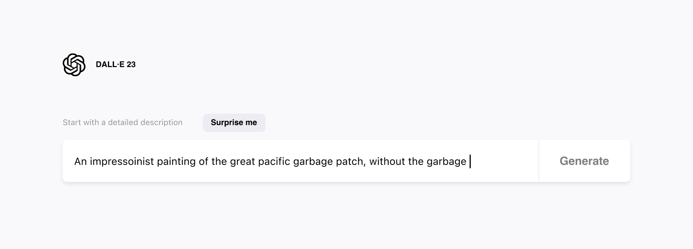
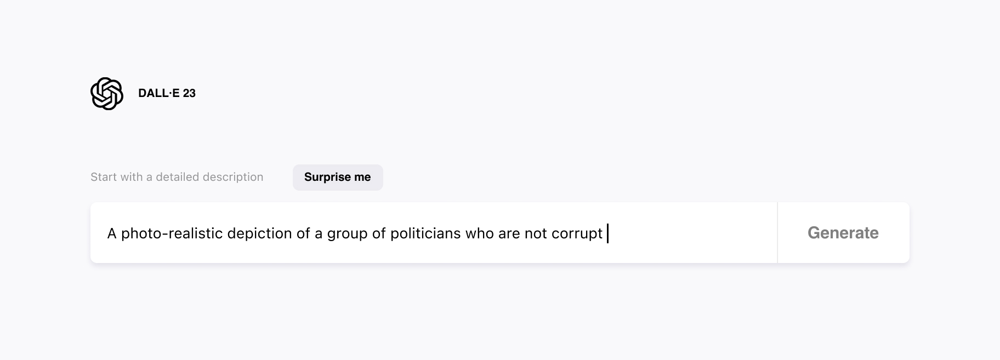
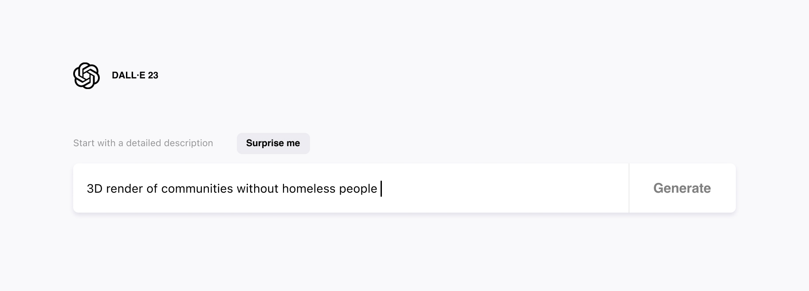
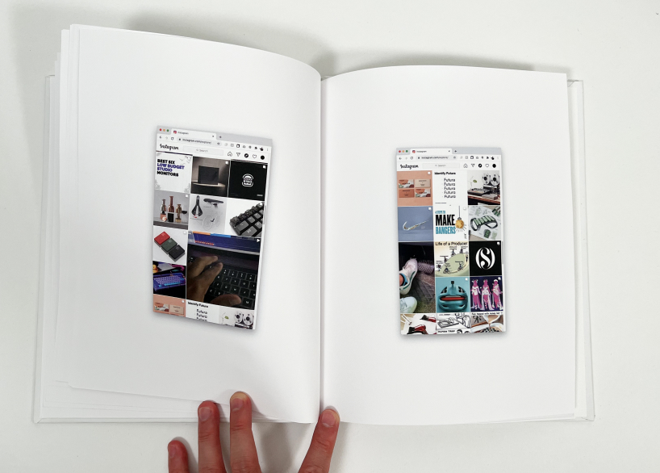
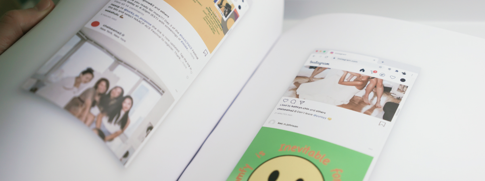
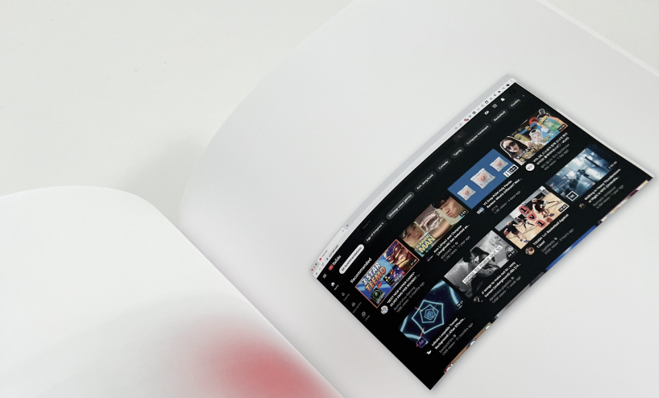
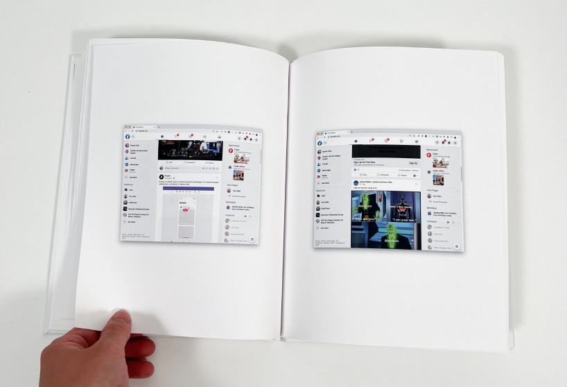
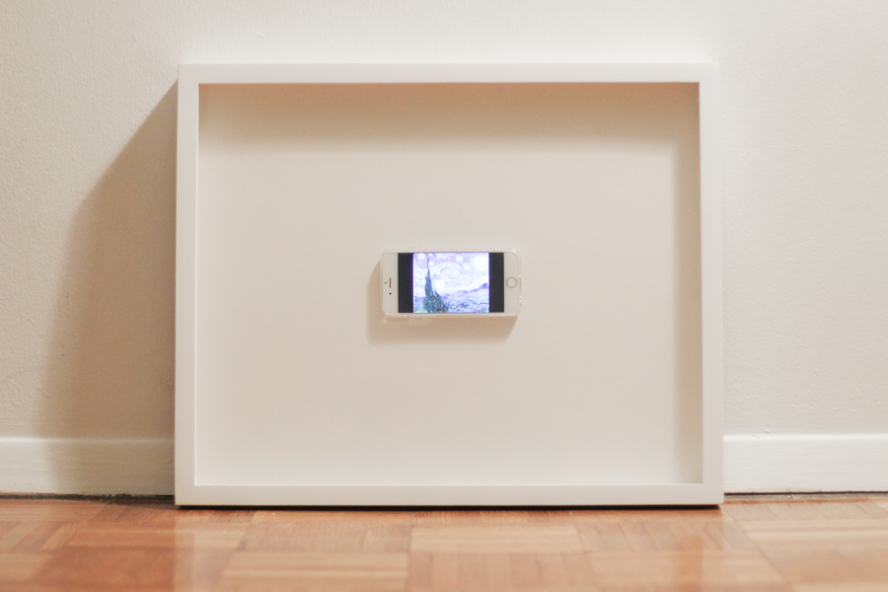

As an artist, I explore our relationship with technology. ↓
2022
DALL·E 23 is a satiracal vision for DALL·E that can solve wicked problems.
DALL·E, Midjourney, and other AI/ML tools allow us to tangibly observe fantasies and possibilities we could never see. Aspects of our world have been so ingrained in us that we can no longer imagine what a world without it's wickedness.
See More



2020
Paper Feeds is a printed book of all of my algorithmic feeds from various social platforms like instagram, twitter, facebook, youtube, etc.
Although the algorithm of all of these social platforms are hyper-personalized, they are rigid and unchangeable. We are at the mercy of what the machine thinks would extract the most value out of us. As such, we don't have control over our feeds. We consume what we are given.
See More




2020
King of the Hill is a scratch lottery ticket where every player is a winner and the jackpot loser (or winner) pays for the sum of all the winners.
Lottery mechanisms promise a jackpot payout to the winner. This incentivizes lottery companies to heavily target and advertise in poorer neighborhoods. King of the Hill flips the mechanism by promising a smaller payout to every player but a large debt to the jackpot winner.
See More


2016
The * Night is a framed iphone displaying the artwork from Vincent Van Gogh.
This piece was in response to my visit to the MoMA in New York where I observed more people were taking photos of the art rather than enjoying it on their own.
See More
